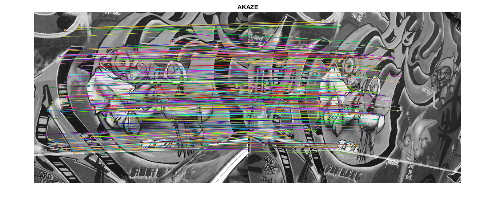

AKAZE local features matching
In this demo, we will learn how to use AKAZE local features to detect and match keypoints on two images. We will find keypoints on a pair of images with given homography matrix, match them and count the number of inliers (i.e. matches that fit in the given homography).
Sources:
Contents
Description
You can find expanded version of this example here.
We are going to use images 1 and 3 from Graffity sequence of Oxford dataset.

Homography is given by a 3-by-3 matrix shown below.
Code
Options
inlier_threshold = 2.5; % Distance threshold to identify inliers nn_match_ratio = 0.8; % Nearest neighbor
Load grayscale images
fnames = {
fullfile(mexopencv.root(), 'test', 'graf1.png')
fullfile(mexopencv.root(), 'test', 'graf3.png')
};
imgs = cell(size(fnames));
for i=1:numel(fnames)
% downloading if necessary
if exist(fnames{i}, 'file') ~= 2
disp('Downloading image...')
[~,name,ext] = fileparts(fnames{i});
baseURL = 'https://cdn.rawgit.com/opencv/opencv/3.2.0/samples/data/';
urlwrite([baseURL, name, ext], fnames{i});
end
% read image
imgs{i} = cv.imread(fnames{i}, 'Grayscale',true);
end
[img1, img2] = deal(imgs{:});
whos img1 img2Name Size Bytes Class Attributes img1 640x800 512000 uint8 img2 640x800 512000 uint8
ground-truth homography
H = [
7.6285898e-01 -2.9922929e-01 2.2567123e+02
3.3443473e-01 1.0143901e+00 -7.6999973e+01
3.4663091e-04 -1.4364524e-05 1.0000000e+00
];
display(H)H =
0.7629 -0.2992 225.6712
0.3344 1.0144 -77.0000
0.0003 -0.0000 1.0000
Detect keypoints and compute descriptors using AKAZE
if true name = 'AKAZE'; akaze = cv.AKAZE(); [kpts1, desc1] = akaze.detectAndCompute(img1); [kpts2, desc2] = akaze.detectAndCompute(img2); else % requires xfeatures2d from opencv_contrib name = 'LATCH'; orb = cv.ORB('MaxFeatures',10000); kpts1 = orb.detect(img1); kpts2 = orb.detect(img2); latch = cv.LATCH(); desc1 = latch.compute(img1, kpts1); desc2 = latch.compute(img2, kpts2); end whos kpts1 kpts2 desc1 desc2
Name Size Bytes Class Attributes desc1 2418x61 147498 uint8 desc2 2884x61 175924 uint8 kpts1 1x2418 1760688 struct kpts2 1x2884 2099936 struct
Use brute-force matcher to find 2-nn matches. We use Hamming distance, because AKAZE uses binary descriptor by default.
matcher = cv.DescriptorMatcher('BruteForce-Hamming'); matches = matcher.knnMatch(desc1, desc2, 2); whos matches
Name Size Bytes Class Attributes matches 1x2418 3211104 cell
Use 2-nn matches to find correct keypoint matches. If the closest match is ratio closer than the second closest one, then the match is correct.
idx = cellfun(@(m) m(1).distance < nn_match_ratio * m(2).distance, matches); matches = cellfun(@(m) m(1), matches(idx)); kp1 = kpts1([matches.queryIdx] + 1); kp2 = kpts2([matches.trainIdx] + 1); whos matches kp1 kp2
Name Size Bytes Class Attributes kp1 1x382 278480 struct kp2 1x382 278480 struct matches 1x382 183616 struct
Check if our matches fit in the homography model. If the distance from first keypoint's projection to the second keypoint is less than threshold, then it it fits in the homography.
pts1 = cat(1, kp1.pt); pts1(:,3) = 1; pts1 = (H * pts1.').'; pts1 = bsxfun(@rdivide, pts1(:,1:2), pts1(:,3)); pts2 = cat(1, kp2.pt); d = sqrt(sum((pts1 - pts2).^2, 2)); idx = d < inlier_threshold; whos pts1 pts2 fprintf('%d inliers\n', nnz(idx));
Name Size Bytes Class Attributes pts1 382x2 6112 double pts2 382x2 6112 double 267 inliers
We create a new set of matches for the inliers, because it is required by the drawing function.
kp1_good = kp1(idx); kp2_good = kp2(idx); matches_good = matches(idx); for i=1:numel(matches_good) matches_good(i).queryIdx = i-1; matches_good(i).trainIdx = i-1; end whos kp1_good kp2_good matches_good
Name Size Bytes Class Attributes kp1_good 1x267 194760 struct kp2_good 1x267 194760 struct matches_good 1x267 128416 struct
Show the result
res = cv.drawMatches(img1, kp1_good, img2, kp2_good, matches_good); imshow(res), title(name)
Warning: Image is too big to fit on screen; displaying at 67%
Print some statistics
fprintf('%s Matching Results:\n', name); fprintf('Keypoints 1: %d\n', numel(kpts1)); fprintf('Keypoints 2: %d\n', numel(kpts2)); fprintf('Matches: %d\n', numel(matches)); fprintf('Inliers: %d\n', numel(matches_good)); fprintf('Inliers Ratio: %f\n', numel(matches_good) / numel(matches));
AKAZE Matching Results: Keypoints 1: 2418 Keypoints 2: 2884 Matches: 382 Inliers: 267 Inliers Ratio: 0.698953
References
- (AKAZE) Pablo F Alcantarilla, Jesus Nuevo, and Adrien Bartoli. "Fast explicit diffusion for accelerated features in nonlinear scale spaces". Trans. Pattern Anal. Machine Intell, 34(7):1281-1298, 2011.
- (LATCH) Gil Levi and Tal Hassner, "LATCH: Learned Arrangements of Three Patch Codes", arXiv preprint arXiv:1501.03719, 15 Jan. 2015